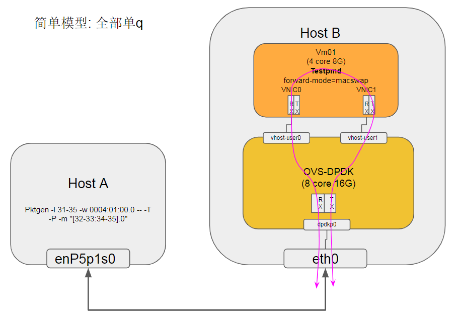

1. 环境
| 服务器 | Host A 10.129.41.129 | Host B 10.129.41.130 | Note |
|---|---|---|---|
| Socket | 1 | 1 | 单socket |
| CPU | 48core@2.6G HXT1.0 | 46core@2.6G HXT1.0 | sudo dmidecode -t processor |
| MEM | 96G | 96G | free -h |
| NIC | MLX CX4121A 10G 0004:01:00.0 enP4p1s0f0 | MLX CX4121A 10G 0004:01:00.0 enP4p1s0f0 | ibdev2netdev -v |
| NIC | MLX CX4121A 10G 0004:01:00.1 enP4p1s0f1 | MLX CX4121A 10G 0004:01:00.1 enP4p1s0f1 | ibdev2netdev -v |
| OS | CentOS 7.5.1804 | CentOS 7.5.1804 | cat /etc/redhat-release |
| kernel | 4.14.62-5.hxt.aarch64 | 4.14.62-5.hxt.aarch64 | uname -r |
| Mellanox OFED version | 4.4-1.0.0.0 | 4.4-1.0.0.0 | ofed_info -s |
| QEMU version | NA | 2.12.1 | qemu-system-aarch64 --version 源码编译 |
| DPDK version | 17.11.4 | 17.11.4 | 源码编译 |
| pktgen version | 3.4.9 | NA | 源码编译 |
| OVS(with DPDK) version | NA | 2.10.1(with dpdk 17.11.4) | sudo ovs-vsctl show 源码编译 |
| libvirt version | NA | 4.6.0 | 源码编译 |
| virt-manager version | NA | 1.5.1 | 源码安装 |
2. 配置
预置条件: DPDK, OVS, Qemu, libvirt, virt-manager已经成功编译安装
2.1. OVS配置
| OVS选项 | 值 | 说明 |
|---|---|---|
| dpdk-init | true | |
| bridge | ovsbr0 | |
| pmd-cpu-mask | FF00000000 | 8个core 32 33 34 35 36 37 38 39 |
| dpdk-socket-mem | 16384 | 单socket 16G |
| vhost-user port 0 | dpdkvhostuser0 | |
| vhost-user port 1 | dpdkvhostuser1 | |
| dpdk port0 | dpdkp0 | MLX CX4 10G NIC |
#增加32G的hugepage
sudo bash -c "echo 64 > /sys/kernel/mm/hugepages/hugepages-524288kB/nr_hugepages"
#开始ovs
export PATH=$PATH:/usr/local/share/openvswitch/scripts
sudo ovs-ctl start
#打开硬件offload, 2.10才有; 2.9.3没效果
#miniflow_extract, dpcls_lookup等函数被offload了
sudo ovs-vsctl --no-wait set Open_vSwitch . other_config:hw-offload=true
#多条流会有用? :提高~15%
sudo ovs-vsctl --no-wait set Open_vSwitch . other_config:smc-enable=true
#打开dpdk初始化
sudo ovs-vsctl --no-wait set Open_vSwitch . other_config:dpdk-init=true
#新增一个bridge, 使用用户态datapath模式
sudo ovs-vsctl add-br ovsbr0 -- set bridge ovsbr0 datapath_type=netdev
#配置pmd跑在8个核上, core 32 33 34 35 36 37 38 39
sudo ovs-vsctl set Open_vSwitch . other_config:pmd-cpu-mask=FF00000000
#配置使用node0的16G内存.
sudo ovs-vsctl --no-wait set Open_vSwitch . other_config:dpdk-socket-mem="16384"
#增加物理port, 对应物理NIC
sudo ovs-vsctl add-port ovsbr0 dpdkp0 -- set Interface dpdkp0 type=dpdk options:dpdk-devargs=0004:01:00.0
#增加两个port, 类型是dpdkvhostuserclient
sudo ovs-vsctl add-port ovsbr0 dpdkvhostuser0 -- set Interface dpdkvhostuser0 type=dpdkvhostuserclient
sudo ovs-vsctl set Interface dpdkvhostuser0 options:vhost-server-path="/tmp/dpdkvhostuser0"
sudo ovs-vsctl add-port ovsbr0 dpdkvhostuser1 -- set Interface dpdkvhostuser1 type=dpdkvhostuserclient
sudo ovs-vsctl set Interface dpdkvhostuser1 options:vhost-server-path="/tmp/dpdkvhostuser1"
#以下为可选配置
#配置多queue
sudo ovs-vsctl set Interface dpdkvhostuser0 options:n_rxq=2
sudo ovs-vsctl set Interface dpdkvhostuser1 options:n_rxq=2
#设置物理port使用2个q
sudo ovs-vsctl set Interface dpdkp0 options:n_rxq=2
2.2. VM配置
预置条件: libvirtd已经成功启动 先用virt-manager创建2个VM, 配置如下: VM | VM01 | VM02 ---|---|---| CPUs | 4 | 4 Memory | 8192M | 8192M Disk | hxt-centos7.5-01.qcow2 32G | hxt-centos7.5-02.qcow2 32G NIC(for external Net) | virtio NAT | virtio NAT NIC(for test) | vhostuser0 | vhostuser0 NIC(for test) | vhostuser1 | vhostuser1
#启动libvirtd服务
sudo systemctl start libvirtd
#启动virt-manager
sudo xauth add $(xauth -f /home/bai/.Xauthority list | tail -1)
sudo virt-manager -c 'qemu+unix:///system?socket=/usr/local/var/run/libvirt/libvirt-sock'
#启动一个VM, 这个VM配置如上
sudo virsh create ~/repo/save/vm/2vhostuser.xml
3. 实验1 OVS全部1Q
$ sudo ovs-vsctl set Interface dpdkp0 options:n_rxq=1
$ sudo ovs-vsctl set Interface dpdkvhostuser0 options:n_rxq=1
$ sudo ovs-vsctl set Interface dpdkvhostuser1 options:n_rxq=1
$ sudo ovs-appctl dpif/show
netdev@ovs-netdev: hit:8540019443 missed:406
ovsbr0:
dpdkp0 3/4: (dpdk: configured_rx_queues=1, configured_rxq_descriptors=2048, configured_tx_queues=9, configured_txq_descriptors=2048, lsc_interrupt_mode=false, mtu=1500, requested_rx_queues=1, requested_rxq_descriptors=2048, requested_tx_queues=9, requested_txq_descriptors=2048, rx_csum_offload=true)
dpdkvhostuser0 1/2: (dpdkvhostuser: configured_rx_queues=1, configured_tx_queues=1, mtu=1500, requested_rx_queues=1, requested_tx_queues=1)
dpdkvhostuser1 2/3: (dpdkvhostuser: configured_rx_queues=1, configured_tx_queues=1, mtu=1500, requested_rx_queues=1, requested_tx_queues=1)
ovsbr0 65534/1: (tap)
3.1. 拓扑模型
3.1.1. 拓扑1
pktgen发64字节小包, 单条流, 目的mac随意, 经过OVS到VM, VM跑testpmd macswap转发, 只经过一个vhost user port
在VM上执行
sudo arm64-armv8a-linuxapp-gcc/app/testpmd -w 04:00.0 -- -i --forward-mode=macswap
拓扑1: 经过1个vhostuser port, 单q
3.1.2. 拓扑2
在VM上执行
sudo arm64-armv8a-linuxapp-gcc/app/testpmd -- -i --forward-mode=macswap
拓扑2: 经过2个vhostuser port, 单q

3.1.3. 性能结果
上面两个图性能差不多, 大约如下:
| Frame Size (Bytes) | Max Line Rate (Mpps) | Throughput (Mpps) | % Line Rate |
|---|---|---|---|
| 64 | 14.88 | 3.85 | 25.87% |
| 128 | 8.45 | 3.33 | 39.40% |
| 256 | 4.53 | 3.25 | 71.74% |
| 512 | 2.35 | 2.35 | 100% |
| 1024 | 1.20 | 1.20 | 100% |
| 1518 | 0.81 | 0.81 | 100% |
3.2. 拓扑1运行数据
稳定状态下OVS的pps统计
| 调查对象 | 运行状况 |
|---|---|
| rxq分布 | |
| core 33统计 |  |
| core 34统计 |
3.3. 拓扑1多流(TCP)运行数据
| case# | L2 flow# | L3 flow# | dst ip | src ip | dst port | src port | dst mac | src mac | |
|---|---|---|---|---|---|---|---|---|---|
| pktgen default single | 1 |
1 |
192.168.1.1 | 192.168.0.1 | 5678 | 1234 | 00:00:00:00:00:00 | ec:0d:9a:d9:89:86 | |
| pktgen default range | 1 |
254*255*255 = 16516350 |
192.168.1.{1..254} | 192.168.0.1 | {0..254} | {0..254} | 00:00:00:00:00:00 | ec:0d:9a:d9:89:86 | |
| case 1 | 1 |
2*255*255 = 130050 |
192.168.1.{1..2} | 192.168.0.1 | {0..254} | {0..254} | 00:00:00:00:00:00 | ec:0d:9a:d9:89:86 | |
| case 2 | 2 |
1 |
192.168.1.1 | 192.168.0.1 | 0 | 0 | 00:00:00:00:00:00 | 00:00:00:00:00:{01 .. 02} | |
| case 3 | 4 |
1 |
192.168.1.1 | 192.168.0.1 | 0 | 0 | 00:00:00:00:00:00 | 00:00:00:00:00:{01 .. 04} | |
| case 4(CMCC) | 10000 |
1 |
192.168.1.1 | 192.168.0.1 | 0 | 0 | 00:00:00:00:00:00 | 00:00:00:00:{00:01 .. 27:10} | |
| case 5 | 8 |
1 |
192.168.1.1 | 192.168.0.1 | 0 | 0 | 00:00:00:00:00:00 | 00:00:00:00:00:{01 .. 08} | |
| case 6 | 255 |
1 |
192.168.1.1 | 192.168.0.1 | 0 | 0 | 00:00:00:00:00:00 | 00:00:00:00:00:{01 .. ff} | |
| case 7 | 2000 |
1 |
192.168.1.1 | 192.168.0.1 | 0 | 0 | 00:00:00:00:00:00 | 00:00:00:00:{00:01 .. 07:d0} | |
| case 8 | 4000 |
1 |
192.168.1.1 | 192.168.0.1 | 0 | 0 | 00:00:00:00:00:00 | 00:00:00:00:{00:01 .. 0f:a0} | |
| case 9 | 3000 |
1 |
192.168.1.1 | 192.168.0.1 | 0 | 0 | 00:00:00:00:00:00 | 00:00:00:00:{00:01 .. 0b:b8} | |
| case 10 | 2500 |
1 |
192.168.1.1 | 192.168.0.1 | 0 | 0 | 00:00:00:00:00:00 | 00:00:00:00:{00:01 .. 09:c4} |
注:
- case 4(CMCC): 是CMCC NFV测试规范里的要求配置:
CMCC NFV测试规范: 7.3.5.1 基于10GE网卡的网络转发性能
3.3.1. pktgen命令参考
enable 0 range
#从默认状态的range, IP变化2个
range 0 dst ip max 192.168.1.2
#从默认状态的range, 改为range模式的单流
range 0 dst ip inc 0.0.0.0
range 0 dst port inc 0
range 0 src port inc 0
#改变src mac, 10000个
range 0 src mac 00:00:00:00:00:01 00:00:00:00:00:01 00:00:00:00:27:10 00:00:00:00:00:01
#改变src mac, 2个
range 0 src mac 00:00:00:00:00:01 00:00:00:00:00:01 00:00:00:00:00:02 00:00:00:00:00:01
#改变src mac, 2000个
range 0 src mac 00:00:00:00:00:01 00:00:00:00:00:01 00:00:00:00:07:d0 00:00:00:00:00:01
3.3.2. 性能数据
| case | L2 flow# | L3 flow# | Throughput@64B (Mpps) | OVS flow# | Note |
|---|---|---|---|---|---|
| pktgen default single | 1 |
1 |
3.82 | 2 | |
| case 1 | 1 |
2*255*255 = 130050 |
3.32 | 2 |  |
| pktgen default range | 1 |
254*255*255 = 16516350 |
2.31 | 2 |  |
| case 2 | 2 |
1 |
3.00 | 4 |  |
| case 3 | 4 |
1 |
2.58 | 8 | |
| case 5 | 8 |
1 |
2.31 | 16 |  |
| case 6 | 255 |
1 |
1.89 | 510 | |
| case 7 | 2000 |
1 |
1.77 | 4000 |  |
| 以上case的htop | ---- | ---- | ---- | ---- |  |
| 以下case OVS开始"不正常" | ---- | ---- | ---- | ---- | |
| case 10 | 2500 |
1 |
1.30 | 5000 | |
| case 9 | 3000 |
1 |
1.10 | 6000 | |
| case 8 | 4000 |
1 |
0.88 | 8000 | |
| case 4(CMCC) | 10000 |
1 |
0.68 | 20000 |  |
注:
- 查OVS的flow数:
sudo ovs-appctl dpctl/show --statistics - dpdkvhostuser0时不时有TX dropped
3.3.3. 可能的瓶颈
首先是VM里面的testpmd? 其次是dpdkp0收包?
3.4. 配flow
#配flow
sudo ovs-vsctl set interface dpdkp0 ofport_request=1
sudo ovs-vsctl set interface "dpdkvhostuser0" ofport_request=2
sudo ovs-vsctl set interface "dpdkvhostuser1" ofport_request=3
sudo ovs-ofctl add-flow ovsbr0 in_port=1,action=output:2
sudo ovs-ofctl add-flow ovsbr0 in_port=2,action=output:1
手动配端口flow之后, 源mac变化的所有case里, 自动生成的flow个数一直保持为2, 性能的下降也变小了很多; 对比之前没有配置port flow规则的时候, 生成的flow个数和源mac个数正相关.
$ sudo ovs-ofctl dump-flows ovsbr0
cookie=0x0, duration=735.584s, table=0, n_packets=2560466336, n_bytes=153627980160, in_port=dpdkp0 actions=output:dpdkvhostuser0
cookie=0x0, duration=734.856s, table=0, n_packets=1393435005, n_bytes=83606100300, in_port=dpdkvhostuser0 actions=output:dpdkp0
cookie=0x0, duration=232599.667s, table=0, n_packets=20420892318, n_bytes=1225253539080, priority=0 actions=NORMAL
$ sudo ovs-appctl dpctl/dump-flows
flow-dump from pmd on cpu core: 39
recirc_id(0),in_port(1),packet_type(ns=0,id=0),eth_type(0x0800),ipv4(frag=no), packets:109149103, bytes:6548946180, used:0.000s, flags:., actions:3
flow-dump from pmd on cpu core: 34
recirc_id(0),in_port(3),packet_type(ns=0,id=0),eth_type(0x0800),ipv4(frag=no), packets:54566419, bytes:3273985140, used:0.000s, flags:., actions:1
3.5. 解决vm里面testpmd性能不够问题
3.6. 拓扑2运行数据
pktgen发64字节小包, 经过OVS到VM, VM跑testpmd macswap转发, 经过2个vhost user port

dpdkp0收包
dpdkp0:
RX packets: 4310802 pps
dpdkp0:
TX packets: 3918137 pps
dpdkvhostuser0:
RX packets: 3688044 pps
dpdkvhostuser0:
TX packets: 250301 pps
dpdkvhostuser1:
RX packets: 229745 pps
dpdkvhostuser1:
TX packets: 4060117 pps